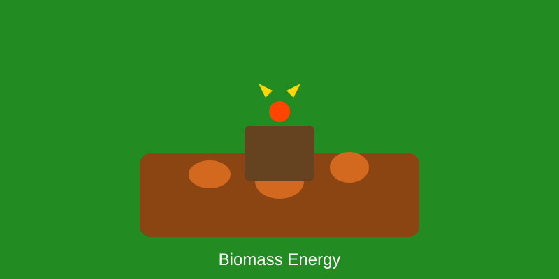

Biomass oldest fuel (wood fire). Modern: ethanol 1908 Henry Ford Model T. Today: 10% global energy. Advanced biofuels from algae/waste targeted for aviation/shipping.
Combustion, gasification, pyrolysis, anaerobic digestion. Co-firing with coal. Biochemical: fermentation to ethanol/butanol. Thermochemical: Fischer-Tropsch liquids.
| Year | Biomass (TWh) | Growth |
|---|---|---|
| 2020 | 60 | - |
| 2021 | 62 | +3% |
| 2022 | 65 | +5% |
Global Energy: 10%
Biofuel Production: 130B liters
Carbon Neutral: With sustainability
Advanced biofuels, BECCS (negative emissions). Waste-to-energy growth. Sustainable aviation fuel mandates driving innovation. Algae biotech breakthrough potential.